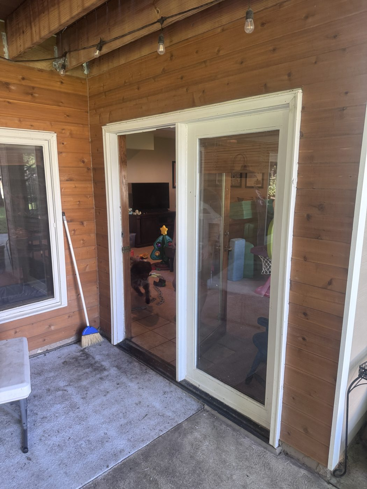
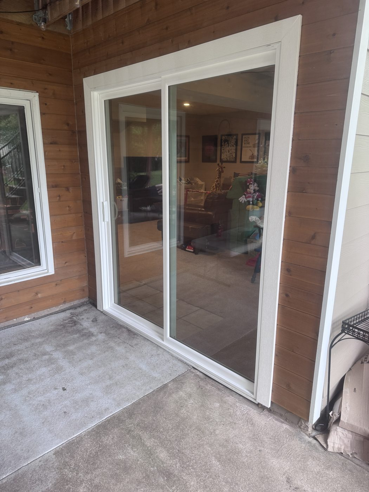

A sticking, drafty door or a fogged-up window drags down a whole room. I pull the old unit, set the new one level and sealed, and finish the trim inside and out.
Request a Free Estimate Or call or text 402-350-2583
Before
AfterAn old window or door doesn’t fail all at once — it gets a little worse every year until one day you realize you’ve been fighting it for a decade. The patio door that sticks. The window with the foggy haze between the panes that won’t wipe off. The entry door that lets a draft in around the edges and bumps your heating bill every winter.
A lot of homes here in The Ridges and the surrounding West Omaha neighborhoods are now old enough that their original windows and doors are due. Seals fail, weatherstripping flattens, rollers and hinges wear out, and the hardware and finish simply date the room. Nebraska’s freeze-thaw winters and big summer heat swings are hard on every exterior opening in the house.
The good news: replacing a window or door is one of the most satisfying upgrades you can make. It’s something you feel every single day — in how the room looks, how it seals, and how easily the thing finally opens.
Not sure whether your window or door is worth replacing or just needs a tune-up? That’s exactly what a free estimate is for. I’ll take a look and tell you straight — sometimes it’s a simple fix, sometimes a replacement makes more sense, and either way you’ll know.
The part that matters most is the step you can’t see once it’s done: prepping the opening and getting the unit dead level and sealed. A window or door that isn’t set right never rolls, latches, or seals the way it should. Twenty-plus years on the tools has taught me that the install is what you’re really paying for — the unit is only as good as the opening it sits in.
Every window and door replacement starts with a free on-site estimate. I measure the opening, talk through your options — slider versus hinged, glass and finish choices — and put a flat-rate written quote in your hands before any work starts. No hourly billing. The one thing I can’t always see until the old unit is out is the condition of the framing behind it; if there’s hidden rot or damage, I stop and walk you through the options before going further — nothing extra gets done without your okay. Materials are billed separately.
The install is everything. A quality window or door installed poorly will leak air and water within a year. I prep the opening, set the unit level and sealed, and flash it so it sheds water — that’s what makes a replacement last.
Twenty-plus years of experience. Patio doors, entry doors, and window swaps are bread-and-butter carpentry I’ve been doing my whole career. I know what lasts and what doesn’t.
Honest about repair vs. replace. If your unit just needs new weatherstripping or a hardware fix, I’ll tell you that — replacing something that doesn’t need it isn’t how I work.
One person, start to finish. When you hire me, you get me — not a crew of strangers, not a salesman handing you off to a subcontractor. Just solid work at the best value for my neighbors.
A neighbor, right here in The Ridges. I live and work in this neighborhood. I’m insured, and I stand behind the work because I’m likely to drive past your house every week.
Yes — sliding and hinged patio doors, exterior entry doors, and window replacements. If you’re replacing a unit with the same size opening, it’s a straightforward job. If you want to change the size of an opening, that’s a bigger project and we’ll talk through it during the estimate.
It depends on the unit you choose and the condition of the opening, so every job starts with a free on-site estimate and a flat-rate written quote before any work begins. You’ll know the full price up front — no hourly surprises. Materials are billed separately.
It happens — doors and windows that haven’t sealed well for years often have some damage in the framing or sill. Once the old unit is out and I can see it, I stop and walk you through the options before going any further. Nothing extra gets done without your okay. I also handle wood rot and siding repair, so it can usually be fixed in the same visit.
That’s the goal. We’ll pick a unit, color, and glass that fit your home, and I finish with fresh trim inside and out so the new unit looks like it was always meant to be there.
Usually, yes. Modern units with Low-E glass and tight weatherstripping seal far better than a worn-out original, which means less heated or cooled air leaking out. The drafty edge you feel today is money going out the door — literally.
The Ridges first, then Shadow Ridge, Armbrust Acres, Bay Shores, Leawood, and Pacific Park in West Omaha. If your neighborhood isn’t listed, reach out anyway — areas with the most interest get added first.
Free on-site estimate, no obligation. I’ll tell you straight whether it’s a simple fix or a replacement — and put a flat-rate written quote in your hands before anything starts.
Request a Free EstimateOr call or text 402-350-2583